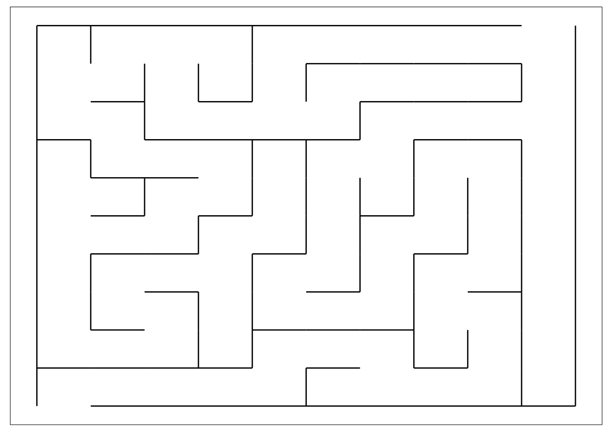

10 Generate a maze in Minecraft
This example illustrates how to generate a perfect maze from R and the render in Minecraft.
10.1 Generate a random maze
First, we need to generate a maze, for which we will use the Rmaze R package’s depth-first search algorithm. As the package is not on CRAN, you have to install from GitHub:
Then load the package and generate a maze with, for example, 10 x 10 tiles:
This is a graph representation of the maze, which can be rendered with ggplot2 very easily:

10.2 Transform maze graph into matrix
Now we have to transform this graph representation into a binary matrix, where we see in 2D which blocks need to be air or wall. Let’s start with a large empty matrix allowing 4 block for every single cell, as in the matrix we will use blocks for the wall as well (unlike in the above plot):
Then let’s mark the surrounding border with ones:
Here is the top corner of the matrix now:
## [,1] [,2] [,3] [,4]
## [1,] 1 1 1 1
## [2,] 1 NA NA NA
## [3,] 1 NA NA NA
## [4,] 1 NA NA NABut we should leave the entrance and exit open in the bottom left and top right corner:
Here is the top right corner showing the maze exit we just made:
## [,1] [,2] [,3] [,4]
## [1,] 1 NA NA 1
## [2,] NA NA NA 1
## [3,] NA NA NA 1
## [4,] NA NA NA 1Now we need to convert the graph object into a data.frame on which we can iterate later to render the actual wall blocks:
Then let’s extract the x and y positions from the A_x_y names:
for (v in c('from', 'to')) {
mazedf[, (paste0(v, 'x')) := as.numeric(sub('A_([0-9]*)_[0-9]*', '\\1', get(v)))]
mazedf[, (paste0(v, 'y')) := as.numeric(sub('A_[0-9]*_([0-9]*)', '\\1', get(v)))]
}And let’s also record in which direction the edge points:
Now let’s map the x and y coordinates to the 2D matrix:
mazedf[, x := nrow(df) - fromx * 4 + 3 - as.numeric(direction == 'top') * 2]
mazedf[, y := fromy * 4 - 1 + as.numeric(direction == 'right') * 2]And then let’s update the blank matrix NA cells with 1, 2 or 3 to represent the actual walls:
for (i in seq_len(nrow(mazedf))) {
cell <- mazedf[i]
if (cell$wall == 'ON') {
df[cell$x + -1:0, cell$y + -1:0] <- 1
}
if (cell$direction == 'top' & cell$wall == 'ON') {
df[cell$x - 0:1, cell$y - 1:2] <- 2
}
if (cell$direction == 'right' & cell$wall == 'ON') {
df[cell$x - 2:3, cell$y - 0:1] <- 3
}
}I know it was a bit tricky, and probably there’s a nicer and lot more elegant way to do all this :) But at least this works and results in something like:

10.3 Render the maze in Minecraft
Now that we have a binary matrix representation of the maze, it’s very easy to render the related blocks in Minecraft. First, we need to load the miner package and establish a connection to a Minecraft server:
Next, we will clean up some space, then generate the floor (diamond) and ceiling (glass), then the wall blocks(gold):
## create objects with number of columns and rows in the dataframe
nr <- nrow(df)
nc <- ncol(df)
## clean up some space
setBlocks(1, 50, 1, nr, 54, nc, 0)
## add floor
setBlocks(1, 50, 1, nr, 50, nc, 57)
## add torch
setBlocks(nr - 4, 51, 2, nr, 52, 4, 50)
## maze ceiling
setBlocks(1, 54, 1, nr, 54, nc, 95)
## 3 blocks tall maze walls
for (i in 1:nrow(df)) {
for (j in 1:ncol(df)) {
if (!is.na(df[i, j])) {
setBlock(i, 51, j, 41)
setBlock(i, 52, j, 41)
setBlock(i, 53, j, 41)
}
}
}The result looks like this:

For a more complete solution, see the mc_maze and mc_mazer functions. The prior generates a maze with given dimensions right in front of a specified player id, while the latter does the same but triggered from the chat window by any player.